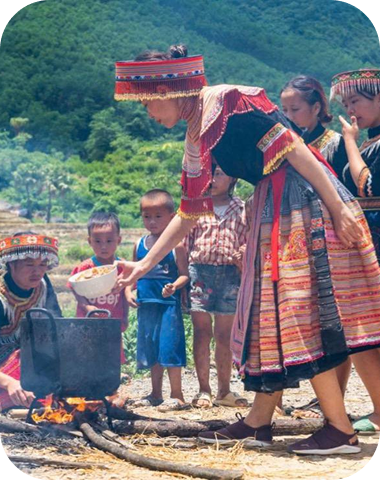
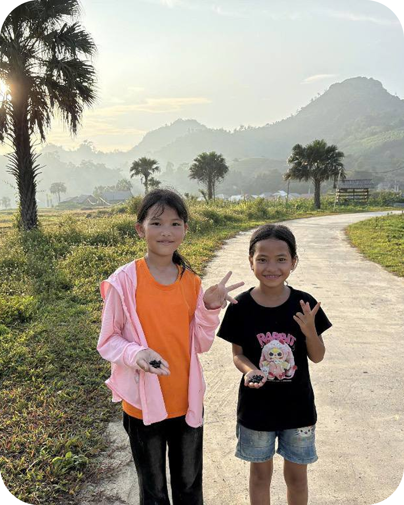
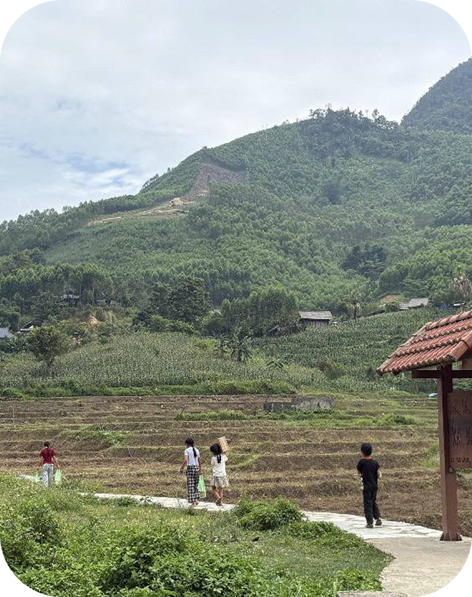
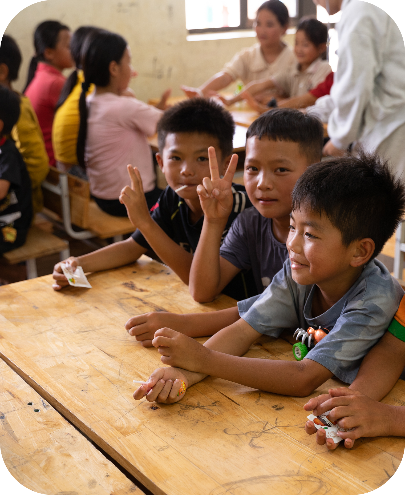

Culture & Food
At 1,200 meters above sea level, the Hmong people of Bản Tèn keep their homes, language and meals rooted in the seasons of rice, plum and peach.
Tèn Village is a highland village in Thái Nguyên Province. Many families here rely on farming, and children's meals are not diverse in nutrients. After a field visit to Tèn Village, we noticed the urgent to improve their nutritional well-being. The project began with one simple question:
How can every meal, even on a small budget, match what each child actually needs?

A glimpse into the everyday moments of children growing up in the highlands.

At 1,200 meters above sea level, the Hmong people of Bản Tèn keep their homes, language and meals rooted in the seasons of rice, plum and peach.

Once a narrow, treacherous trail, the road to the village now sees children beginning their day amidst terraced fields and mountain mist on their way to school.

In the district's most remote village, a nourishing meal at school gives children the strength to learn and grow.
We commit to financial transparency, to protecting the children's information, and to reporting our impact every quarter.